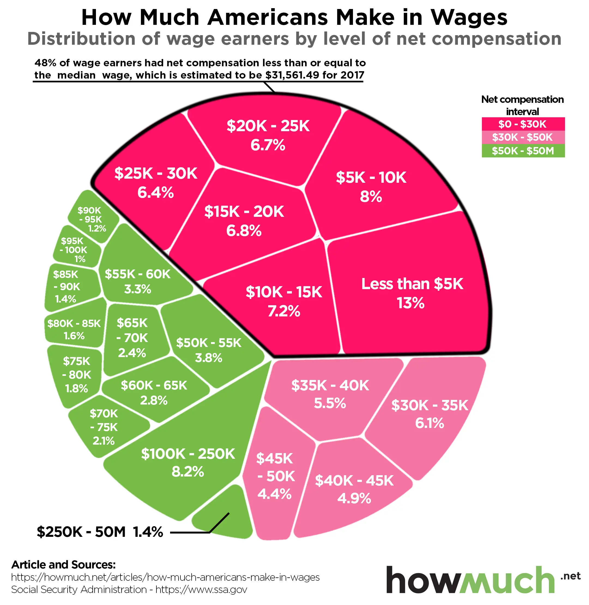

American Dollars 28/8/2026

Irena. (2018, November 6). Visualizing America’s Middle Class Income. Nearly Half of Workers Earn Less than $30,000. HowMuch. https://howmuch.net/articles/how-much-americans-make-in-wages
It was a bit tough when I was looking for an example for this exercise because most of the data visualisations had dead links in them. I could not access the source data at all. Maybe I was just unlucky but I think I saw the docs.google refused to connect with the :( face about 8 times before I found this article regarding the median wages.
1.) https://www.ssa.gov/cgi-bin/netcomp.cgi?year=2017
2.) Social Security Administration. Wage statistics for 2017. www.ssa.gov. https://www.ssa.gov/cgi-bin/netcomp.cgi?year=2017
3.) There is net compensation and the percentage of wage earners, both of them are quantitative and is a ratio variable. Net compensation is measured with US dollars and has a meaningful zero. The percentage of wage earners is measured as a percentage and has a meaningful zero. The net compensation interval is also grouped by colour which can be an ordinal qualitative variable.
4.) The alignment of the diagram and the question posed by the original has a strong alignment. The data shows the percentage of wage earners within the different net compensation ranges. The data visualisation should specify that the data is for the year 2017 specifically.
5.) The data visualisation identifies the US Social Security Administration as its original data source. The SSA confirms that the median net compensation for 2017 is $31,561.49. However, the data visualisation says that 48% of wage earners earned less than or equal to the median, whereas the SSA says that 50% earned less than or equal to the median. This appears to be a reporting error as the data visualisation got the 48% from the table for the $25k - $30k instead of the $30k - $35k.
6.) The original data source is reputable as it is the official website of the Social Security Administration, an official agency of the United States government. The SSA mentions that it includes wages, tips, and others as net compensation. The limitation is that the numbers are for annual compensation per worker, not anual compensation per job. This means that someone with multiple jobs is only represented by one value, which is total wages.